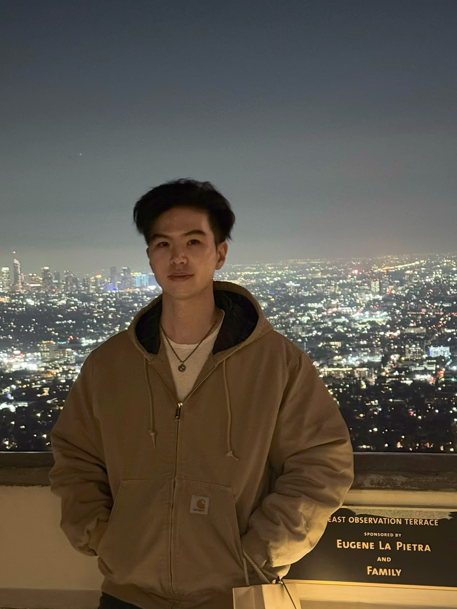

|
Zeng (Aiden) Tao I'm Zeng Tao, a second-year Master's student at Fudan University in Computer Science and Technology. I'm advised by Prof. Wenqiang Zhang. I graduated from Fudan University in 2023 with a Bachelor's degree. I am also fortunate to work with Prof. Zhuowen Tu @UCSD. My research interests focus on visual generation and 3D vision. Email: ztao23 [at] m.fudan.edu.cn |
 |
News2025.01: 1 paper accepted by ICRA 2025. 2024.12: 1 paper accepted by AAAI 2025. 2024.09: 1 paper accepted by NeurIPS 2024 (first-author). 2024.07: 2 papers accepted by ACM MM 2024. 2024.07: 1 paper accepted by ECCV 2024. 2023.07: 3 papers accepted by ACM MM 2023 (including 1 first-author oral paper). |
ResearchRepresentative papers are highlighted. |

|
LCGen: Mining in Low-Certainty Generation for View-consistent Text-to-3D
Zeng Tao, Tong Yang, Junxiong Lin, Xinji Mai, Haoran Wang, Beining Wang, Enyu Zhou, Yan Wang, Wenqiang Zhang NeurIPS, 2024 Paper |

|
All rivers run into the sea: Unified Modality Brain-Inspired Emotional Central Mechanism
Xinji Mai, Junxiong Lin, Haoran Wang, Zeng Tao, Yan Wang, Shaoqi Yan, Xuan Tong, Jiawen Yu, Boyang Wang, Ziheng Zhou, Qing Zhao, Shuyong Gao, Wenqiang Zhang ACM MM, 2024 (Oral) Paper |

|
Suppressing Uncertainties in Degradation Estimation for Blind Super-Resolution
Junxiong Lin, Zeng Tao, Xuan Tong, Xinji Mai, Haoran Wang, Boyang Wang, Yan Wang, Qing Zhao, Jiawen Yu, Yuxuan Lin, Shaoqi Yan, Shuyong Gao, Wenqiang Zhang ACM MM, 2024 Paper |

|
Adaptive Multi-modal Fusion of Spatially Variant Kernel Refinement with Diffusion Model for Blind Image Super-Resolution
Junxiong Lin, Yan Wang, Zeng Tao, Boyang Wang, Qing Zhao, Haoran Wang, Xuan Tong, Xinji Mai, Yuxuan Lin, Wei Song, Jiawen Yu, Shaoqi Yan, Wenqiang Zhang ECCV, 2024 Paper |

|
Freq-HD: An Interpretable Frequency-based High-Dynamics Affective Clip Selection Method for in-the-Wild Facial Expression Recognition in Videos
Zeng Tao, Yan Wang, Zhaoyu Chen, Boyang Wang, Shaoqi Yan, Kaixun Jiang, Shuyong Gao, Wenqiang Zhang ACM MM, 2023 (Oral) Paper / Github |

|
A Capture to Registration Framework for Realistic Image Super-Resolution in the Industry Environment
Boyang Wang, Yan Wang, Qing Zhao, Junxiong Lin, Zeng Tao, Pinxue Guo, Zhaoyu Chen, Kaixun Jiang, Shaoqi Yan, Shuyong Gao, Wenqiang Zhang ACM MM, 2023 Paper / Project |

|
Exploring the Adversarial Robustness of Video Object Segmentation via One-shot Adversarial Attacks
Kaixun Jiang, Lingyi Hong, Zhaoyu Chen, Pinxue Guo, Zeng Tao, Yan Wang, Wenqiang Zhang ACM MM, 2023 Paper |
Scholarships & AwardsChina National Scholarship (Undergrads, top 0.2% domestically). 2022. China National Scholarship (Master's student, top 0.2% domestically). 2024. Outstanding Graduate of Shanghai (Undergrads, top 5%). 2023. Outstanding Student Scholarship. 2020 & 2021. Outstanding Student of Fudan University. Outstanding Student Leader of Fudan University. |
ServicesConference Reviewer: ACM MM '24, NeurIPS '24, ICLR '25, AISTATS '25, CVPR '25, ICML '25 |